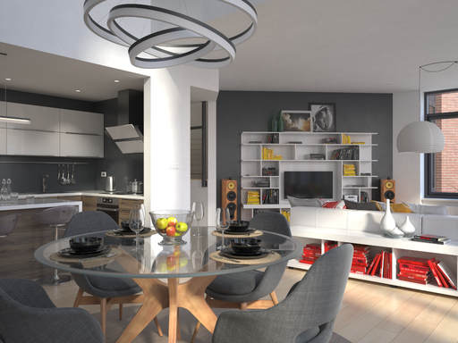
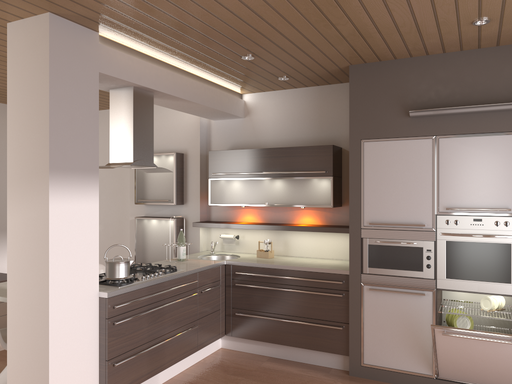
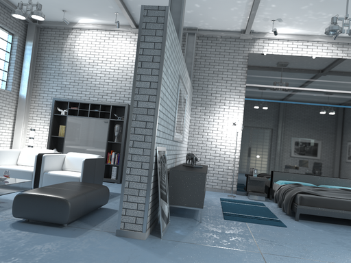
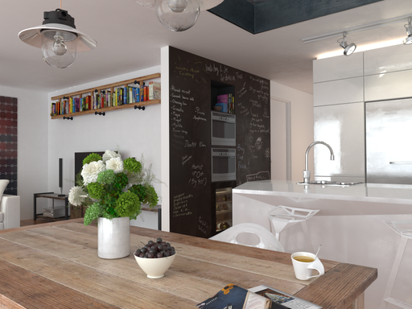
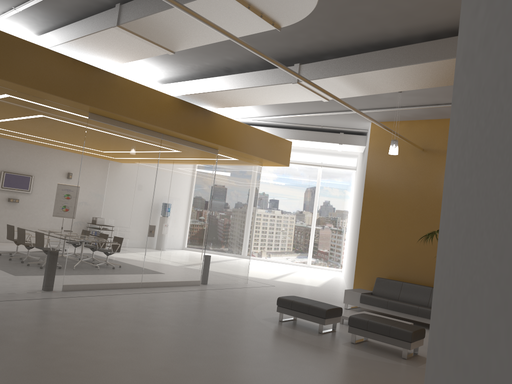

mAP25
Zoo3D winsZoo3D +0.014 · 7.6% higher than ours
A split decision, not a sweep
We win recall and two scenes. Zoo3D wins both AP metrics and three scenes. The comparison exposes exactly where active re-observation succeeds—and what still needs work.
Aggregate metric record · ours
Higher is better for all three metrics. Active lifting has the best recall25 by 0.006. Zoo3D leads AP25 by 0.014 and AP50 by 0.089.
Zoo3D +0.014 · 7.6% higher than ours
Ours +0.006 · 2.4% higher than Zoo3D
Zoo3D +0.089 · 2.44× our value
The scene-level outcome is consistent across AP25, recall25, and AP50: we win the living room and office; Zoo3D wins the kitchen, bedroom, and dining room.
Each card uses an input frame from the evaluated scene. Bold color marks the higher system value in that scene.

ai_051_002| Metric | Ours | Zoo3D |
|---|---|---|
| AP25 | 0.536 | 0.280 |
| Recall25 | 0.679 | 0.446 |
| AP50 | 0.232 | 0.208 |

ai_002_006| Metric | Ours | Zoo3D |
|---|---|---|
| AP25 | 0.008 | 0.028 |
| Recall25 | 0.042 | 0.083 |
| AP50 | 0.000 | 0.028 |

ai_006_008| Metric | Ours | Zoo3D |
|---|---|---|
| AP25 | 0.064 | 0.357 |
| Recall25 | 0.179 | 0.357 |
| AP50 | 0.036 | 0.214 |

ai_037_007| Metric | Ours | Zoo3D |
|---|---|---|
| AP25 | 0.000 | 0.304 |
| Recall25 | 0.000 | 0.357 |
| AP50 | 0.000 | 0.304 |

ai_003_009| Metric | Ours | Zoo3D |
|---|---|---|
| AP25 | 0.292 | 0.000 |
| Recall25 | 0.375 | 0.000 |
| AP50 | 0.042 | 0.000 |
Zoo3D's matched boxes are much tighter. Lower is better for both diagnostics. This is the clearest technical gap exposed by the external comparison.
Mean of the scene-level medians, in metres.
Mean of the scene-level median normalized errors.
The comparison strengthens the paper when it is stated precisely. Our controlled lifting result remains the main win; Zoo3D identifies the next system-level target.
Active lifting retrieves a slightly larger share of the visible objects overall and wins every reported metric in the living room and office.
Its detected instances are substantially tighter, and it recovers the dining-room objects missed by our global proposal sweep.
The paired active–Zoo3D intervals include zero. These are development-set reference results, not proof of a universal system ranking.
Values are equal-scene macro averages from the frozen five-scene Hypersim development reference. Full-precision numbers, system commits, checkpoint hashes, category mapping, and compatibility patches are recorded in hypersim_external_systems_v1.json.